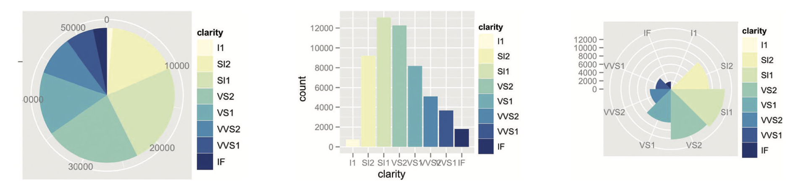

Visualización de datos tabulares
IIC2026
Orientación de ejes
Visualización de datos tabulares
IIC2026
Orientación de ejes
Rectilinea:

(Fuente imagen: DataViz Catalog)
Paralelo

(Fuente imagen: DataViz Catalog)
(Fuente imagen: DataViz Catalog)
Coordenadas paralelas (Parallel coordinates)
(Fuente imagen: DataViz Catalog)
(Fuente: Libro "Visualization, Analysis and Design" )
| Idiom | Coordenadas paralelas. |
| Qué: Datos | Tabular: múltiples atributos de valor. |
| Cómo: Codificar | Despliegue paralelo: posición horizontal usada por distintos ejes, uno por atributo valor, y posición vertical en cada eje expresa valor. Se usa marca de conexión entre ejes para identificar ítem entre ejes. |
| Porqué: Tareas | Encontrar tendencias, outliers, extremos y correlación. |
| Escala | Docenas de atributos, cientos de ítems. |
Radial

(Fuente imagen: DataViz Catalog)
(Fuente: Libro "Visualization, Analysis and Design" )
Gráfico de barra radial (Radial bar chart)
(Fuente imagen: DataViz Catalog)
| Idiom | Gráfico de barra radial. |
| Qué: Datos | Tabular: un atributo cuantitativo y un atributo llave. |
| Cómo: Codificar | Largo de marcas de líneas codifica atributo. Despliegue radial según atributo de llave. |
Gráfico de torta (Pie chart)

(Fuente imagen: DataViz Catalog)
| Idiom | Gráfico de torta. |
| Qué: Datos | Tabular: un atributo cuantitativo y un atributo categórico. |
| Cómo: Codificar | Marcas de área con canal de ángulo. Despliegue radial. |
| Porqué: Tarea | Mostrar relación parte-total. |
| Escala | Una docena de categorías. |
Gráfico de área polar (Polar area chart)

(Fuente: Libro "Visualization, Analysis and Design" )
| Idiom | Gráfico de barra radial. |
| Qué: Datos | Tabular: un atributo cuantitativo y un atributo categórico. |
| Cómo: Codificar | Marcas de área con canal de largo. Despliegue radial. |
| Porqué: Tarea | Mostrar relación parte-total. |
| Escala | Una docena de categorías. |
(Fuente: Libro "Visualization, Analysis and Design" )